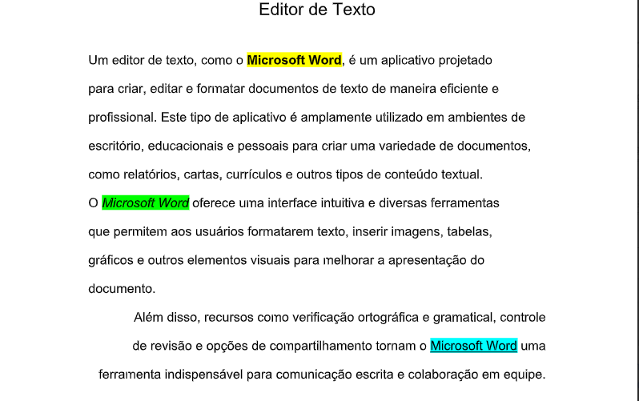
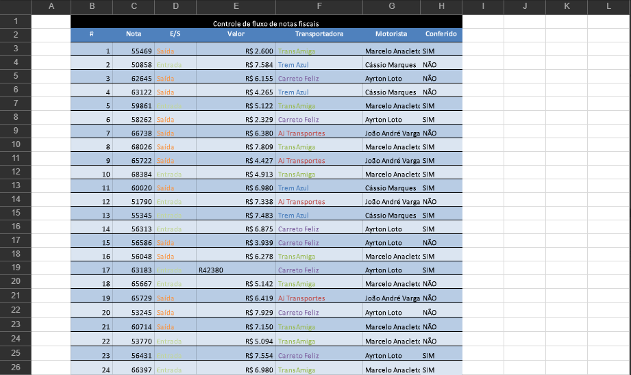
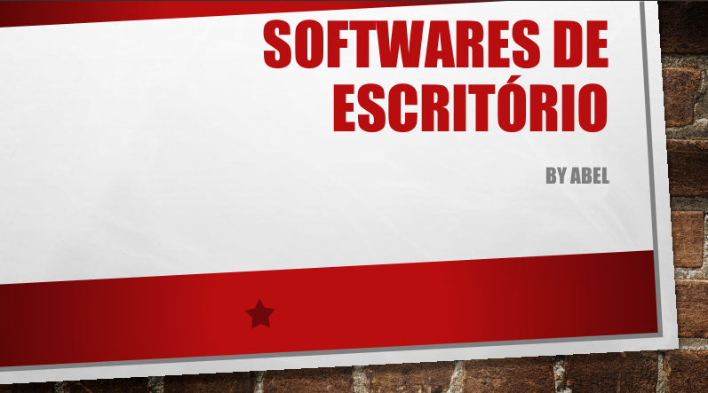

O que é o Hardware de computadores? O que é placa mãe?
Processador? e
memória principal (RAM)?
Hardware
Hardware é toda a parte física do computador, ou seja, tudo o que você pode ver e tocar. Inclui:
- Placa-mãe
- Processador (CPU)
- Memória RAM
- Disco rígido (HD ou SSD)
- Placa de vídeo, teclado, monitor, mouse etc.
Placa Mãe (Motherboard)
É a principal placa do computador, onde todos os outros componentes são conectados e se comunicam entre si.
Funções:
- Liga o processador, memória RAM, armazenamento e placas de expansão.
- Distribui energia e dados entre os componentes.
- Contém circuitos integrados que controlam o funcionamento geral do computador.
Processador (CPU — Unidade Central de Processamento)
É o cérebro do computador. Ele executa as instruções dos programas e realiza os cálculos e tomadas de decisão.
Funções principais:
- Processar dados vindos da memória e dos dispositivos.
- Executar instruções de programas.
- Controlar o funcionamento de todo o sistema.
Memória Principal (RAM — Memória de Acesso Aleatório)
A RAM é onde o computador guarda temporariamente os dados e programas que estão sendo usados naquele momento.
Características:
- É volátil → os dados somem quando o computador é desligado.
- Quanto mais RAM, mais programas você pode abrir simultaneamente sem travar.
O que é um Sistema Operacional (SO)
O Sistema Operacional é um conjunto de programas que controla o funcionamento do computador e faz a comunicação entre o usuário e o hardware (as partes físicas, como processador, memória, teclado, etc).
responsável por:
- Iniciar o computador;
- Gerenciar arquivos e pastas;
- Controlar dispositivos (mouse, impressora, HD, etc.);
- Permitir a execução de programas;
- Gerenciar memória e processador.
Windows
Um dos principais exemplos de sistema operacional é o Windows, desenvolvido pela Microsoft. Ele é amplamente utilizado em computadores pessoais e empresariais por ter uma interface gráfica simples e prática, com janelas, ícones e menus. Suas versões mais conhecidas são o Windows 10 e o Windows 11, que oferecem compatibilidade com a maioria dos programas e jogos disponíveis no mercado.

Linux
Outro exemplo é o Linux, um sistema livre e gratuito baseado em código aberto. Ele é muito usado em servidores, computadores pessoais e até em celulares, já que o Android é baseado nele. O Linux possui diversas versões chamadas de distribuições, como o Ubuntu, Fedora e Debian. É conhecido por sua segurança, estabilidade e personalização.

macOS
O macOS, criado pela Apple, é o sistema operacional utilizado nos computadores MacBook e iMac. Ele se destaca pelo design moderno, rapidez e integração com outros produtos da marca, como o iPhone e o iPad. Assim como o Linux, o macOS é baseado em UNIX, o que o torna um sistema estável e eficiente, muito usado por profissionais de design e edição de vídeo.

Android
Por fim, o Android é o sistema operacional desenvolvido pelo Google, utilizado em smartphones, tablets e televisões inteligentes. Também baseado em Linux, ele é um sistema aberto e personalizável, presente na maioria dos celulares do mundo. Por meio da Play Store, os usuários podem instalar aplicativos e personalizar seus dispositivos conforme suas preferências.

O que é o sistema de arquivos? Como funciona em modo texto (cmd) e modo gráfico (explorer)?
O sistema de arquivos é o conjunto de regras e estruturas usadas pelo sistema operacional para organizar e controlar a forma como os dados são armazenados e recuperados em um dispositivo de armazenamento, como um disco rígido, SSD ou pendrive. Ele é responsável por gerenciar os nomes, tamanhos, localizações e permissões dos arquivos e pastas, garantindo que o usuário e o próprio sistema possam acessar as informações de maneira rápida e segura. Existem diferentes tipos de sistemas de arquivos, como o FAT32 e o NTFS no Windows, ou o EXT4 no Linux, e cada um deles possui suas próprias características e formas de organizar os dados.
No modo texto, por meio do Prompt de Comando (CMD) no Windows, o usuário interage com o sistema de arquivos utilizando comandos digitados. Assim, é possível listar arquivos e pastas com o comando “dir”, criar diretórios com “mkdir”, mudar de pasta com “cd”, copiar arquivos com “copy” ou excluí-los com “del”. Esse modo é mais técnico, exigindo que o usuário conheça os comandos e suas sintaxes, mas oferece maior controle e precisão sobre as operações realizadas, permitindo automatizar tarefas e manipular o sistema de arquivos de forma direta.
Já no modo gráfico, acessado pelo Windows Explorer, a interação ocorre de forma visual, por meio de janelas, ícones e menus. Os arquivos e pastas aparecem representados por imagens e nomes, e as ações são realizadas com cliques, arrastar e soltar ou menus de contexto. Apesar de o usuário não ver os comandos sendo executados, o sistema realiza as mesmas operações que no modo texto, comunicando-se com o sistema de arquivos em segundo plano. Esse modo é mais intuitivo e prático, sendo o mais utilizado por pessoas que preferem uma navegação visual em vez de digitar comandos.
O que é software de escritório?
O software de escritório é um conjunto de programas usados para realizar tarefas administrativas, escolares e profissionais, como a produção de textos, cálculos, apresentações e organização de informações. Esses softwares facilitam o trabalho no computador, tornando as atividades mais rápidas, práticas e eficientes. Eles são amplamente utilizados em escritórios, escolas, empresas e até em casa, pois ajudam a criar documentos, planilhas e apresentações com qualidade profissional.
Exemplos:
- Microsoft Word:utilizado para criar, editar e formatar textos, como trabalhos escolares, relatórios, cartas e documentos oficiais. Permite inserir imagens, tabelas e gráficos, além de revisar ortografia e gramática automaticamente.
- Microsoft Excel: usado para cálculos e organização de dados em planilhas. É muito aplicado em controle financeiro, elaboração de orçamentos, gráficos e análises de dados.
- Microsoft PowerPoint: serve para criar apresentações de slides, combinando textos, imagens, sons e vídeos. É amplamente utilizado em palestras, aulas e reuniões.


